記帳在一個 App
待辦放在備忘錄
想完成的目標記在某個地方，後來又忘了
每個月的薪水拿到後卻常常不知道如何分配、花去哪裡了
看似每天都在過生活
卻很少有一個地方，真正把它們留下來
「但生活，是緊密相連的。」
把待辦、目標、記帳、資產負債、生活打卡與心情紀錄，整理在一起，也慢慢記下你走過的生活。
你想存下來的錢，可能和某個很想完成的目標有關。
最近一直亂花錢，也可能剛好是那陣子壓力很大。
今天完成的一件小事，可能正慢慢把你帶向幾個月後想成為的自己。
生活小夥伴想做的，不是再塞給你更多需要管理的東西。
而是把原本散落的生活，重新整理回一個地方。
直到有一天回頭看，你會發現——
那些當時只覺得很普通的紀錄，其實早就慢慢拼成了你走過的生活。
打卡小遊戲、待辦、心情、日記與記帳紀錄，都會慢慢留在同一個月曆裡。
「打開首頁，就能先看看今天的自己。」
想到的事情先放進來。可以按照日期查看，也能搜尋日期與內容。
「不用再擔心哪一項事情沒完成～」
✨ 生活小夥伴也能改成專屬於你的名字呦！
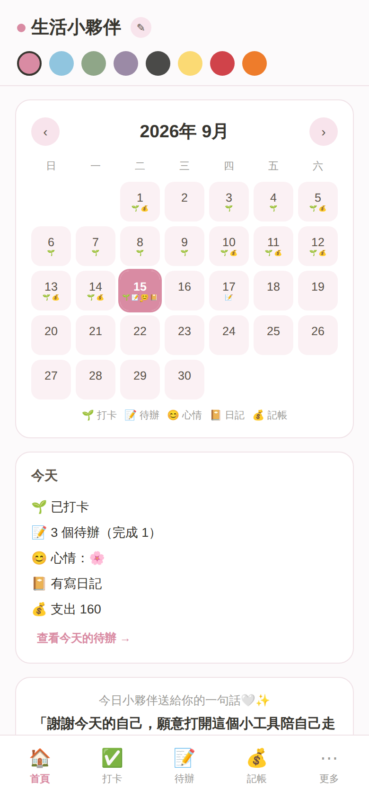
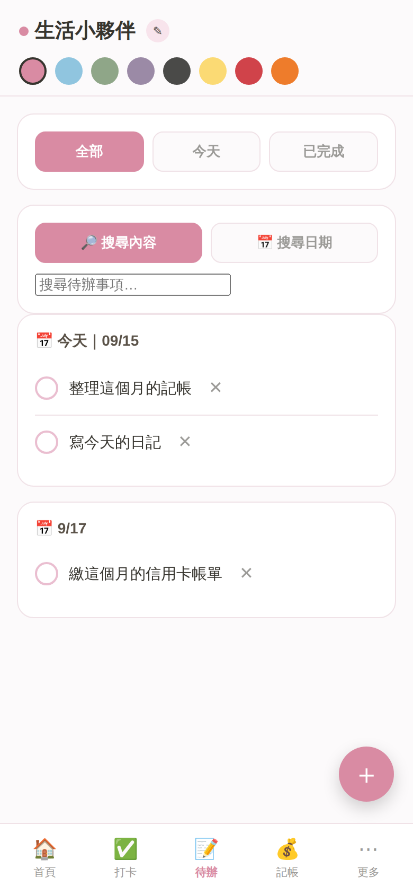
生活小夥伴的農場打卡小遊戲，不是上班時那種討人厭的打卡，而是有打卡的日子，你的小農場會慢慢成長；偶爾沒有做到，也不會讓以前的累積全部消失。反而可能會有殭屍等其他訪客偷偷出現！農場還能隨意更改成你喜歡的名字呦～
「有做到的日子，會留下成長。」
「沒做到的日子，也會留下不同的故事。」
「真正能陪你很久的工具，不需要你每天都完美。」
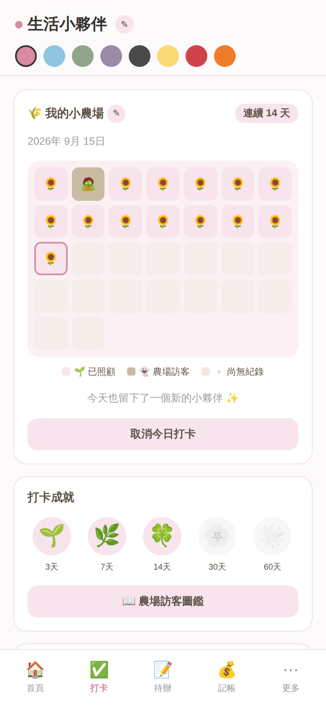
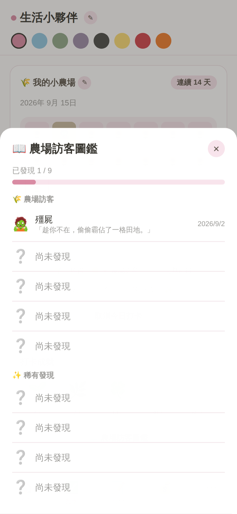
「我的資產」不是只有記帳，而是讓你可以從日常金流，一路看到自己的整體財務狀況。
收入、支出、金流紀錄與分類，都可以慢慢整理清楚。
「你不是突然變得很會理財，而是終於開始看得懂自己的金流去向。」
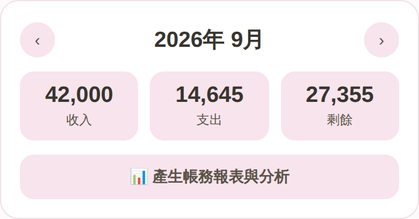
針對每個月的收入與生活需求，安排不同用途的預算，讓你知道這個月的錢要怎麼分配。
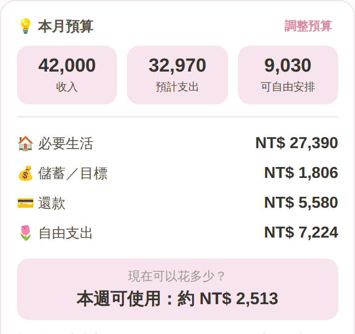
房租、保費、訂閱這類每期都固定的支出，可以預先設定，不用每個月重新輸入。
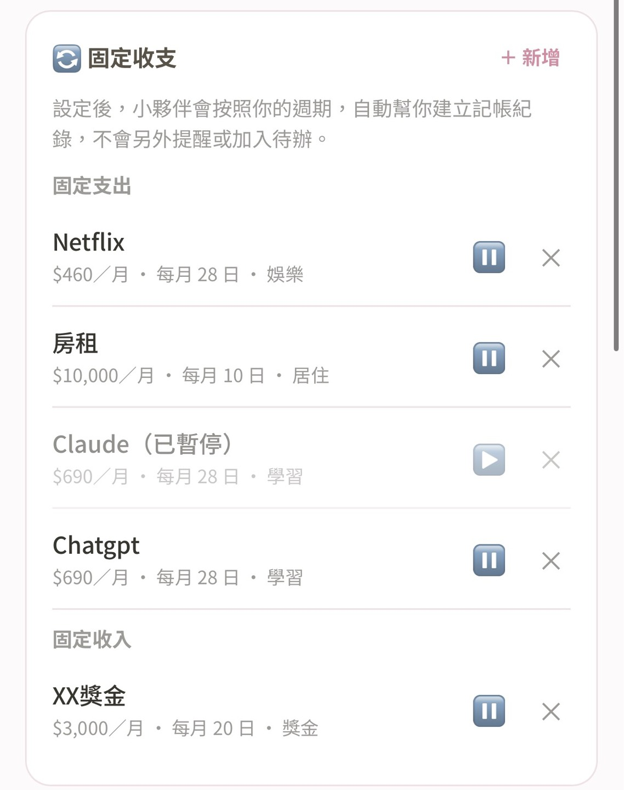
整理自己目前持有的不同資產，慢慢看懂自己的資產累積。
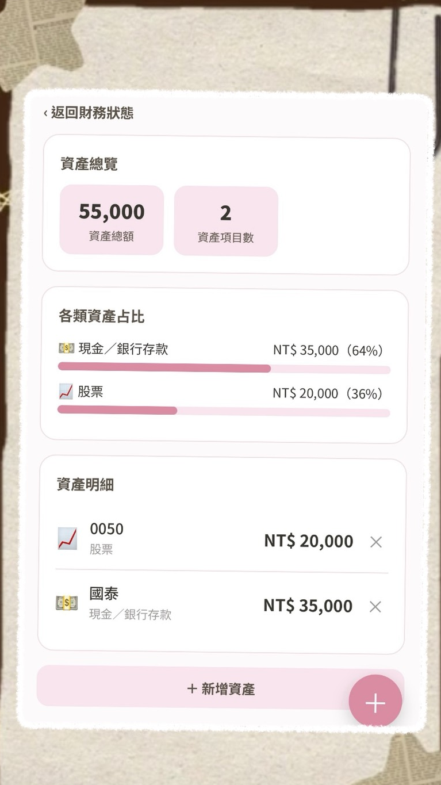
不只看見「還有多少債」，也能看見「自己已經還了多少」。
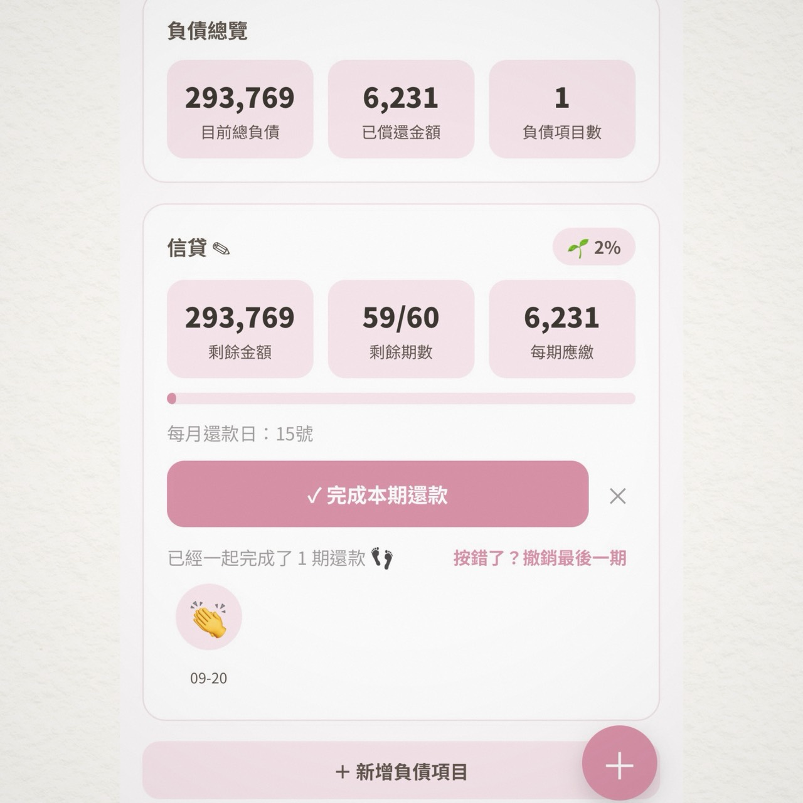
整理與追蹤自己的緊急預備金準備狀況。
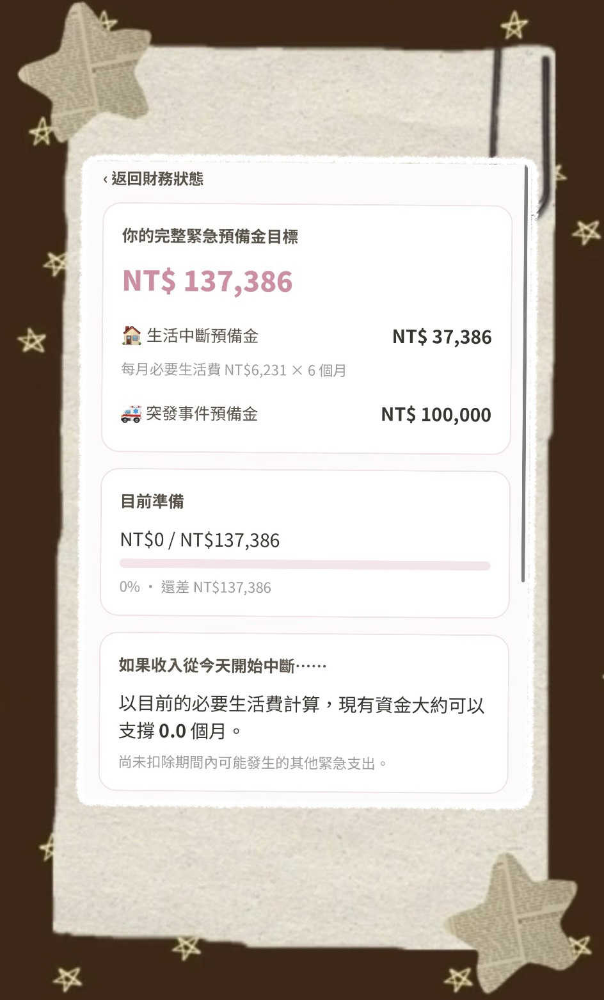
把想完成的事情留下來，再一步一步拆成真正可以開始的小行動。
例如想去日本生活一個月：查語言學校 → 算需要多少錢 → 每月存一筆旅費 → 辦護照 → 看機票 → 找住宿。
「不用現在就知道整條路怎麼走。」
「只要先知道下一步，就可以開始了！」
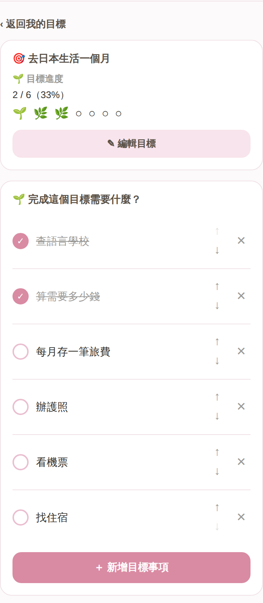
今天開心、很累、有點煩，或只是突然有一句話想留給以後的自己。不用寫很多。
「一句話、幾個字，也可以是今天的紀錄。」
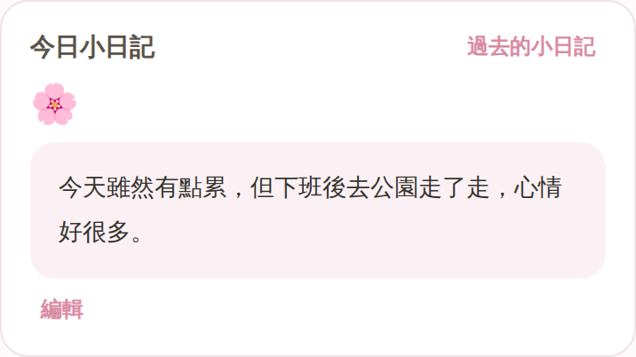
生活小夥伴都將和你一起記錄你的每一刻。
我們會拍照，是因為想把某一個瞬間留下來。但生活裡值得被記住的，其實不單只能用照片紀錄。
今天花出去的一筆錢
完成的一件小事
曾經很想實現的一個目標
那段時間努力還掉的負債
某一天留下來的心情
還有那些認真生活、偶爾偷懶、經歷挫折、跌入谷底，最後又重新回來的日子。
當下看，它們可能都只是一個很普通的紀錄。可是當時間慢慢累積，幾個月後、幾年後再回頭看，你看到的可能會是——
「原來那時候的我，正經歷這件事。」
「原來這個目標，我真的完成了。」
「原來不知不覺，我已經走到這裡了。」
「原來，我是如此努力的在過生活。」
那些當時覺得平凡的日子，早就一點一點，變成了你的故事。
所以生活小夥伴想留下的，不只是今天花了多少錢、完成多少事。而是讓這些散落的日常，隨著時間慢慢連成——「只屬於你的生活軌跡。」
它陪你整理現在，陪你慢慢往前，也替你留下，一路走來的自己。
你的待辦、目標、記帳、資產負債、心情紀錄與生活打卡，都整理在同一個地方。
不用從明天開始。
今天，就先從生活裡的第一件事開始。
不需要。生活小夥伴是網頁系統，直接加入到手機主畫面即可開始使用。
生活小夥伴的資料僅儲存在您目前使用的裝置本機，不會自動同步到其他裝置。
因此更換裝置時，原本的資料不會自動跟著轉移。
不用擔心，只需要定期使用生活小夥伴內建的匯出／匯入功能進行備份即可。
更換裝置前，先將目前的生活紀錄匯出保存，再到新的裝置中匯入，就可以將備份的資料帶回來。
所以為了避免裝置更換、瀏覽器資料被清除等情況造成紀錄遺失，建議養成定期備份的習慣。
生活小夥伴會根據您自行輸入的收支、資產、負債等紀錄，自動整理並呈現相關的財務資訊與分析。
這些內容主要是幫助您更容易看懂自己的財務狀況，作為日常整理與規劃時的參考，並不等同於專業的投資、理財或其他財務建議。
若涉及重要的財務決策，仍建議依照自身實際情況判斷，必要時尋求相關專業人士協助。
不是。生活小夥伴採一次買斷制，不用每個月再付一筆訂閱費。
不需要。隨著生活小夥伴持續優化、增加功能，每一次版本升級後，新購買的價格也可能隨著系統內容更加完整而調整。
但已經購買的使用者不受後續價格調漲影響，也不需要補差價，即可使用後續的版本升級。
記下第一筆錢。
放進第一件待辦。
寫下第一個想完成的目標。
替今天留下一個心情。
讓那些原本散落在腦袋裡、手機裡、不同 App 裡的事情，慢慢回到同一個地方。
生活小夥伴將陪你一起走屬於你的生活花路！